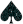

|  [About] [Introduction] [Table] [Variants] |
PokerWeb is a simple table of Poker probabilities laid out nicely in HTML. It was created by Max Battcher for math. It uses only exclusive graphics created by Max Battcher (including portions of the "m-deck" graphics library). These graphics are not public domain, so please do not steal them.
The "m-deck" graphics library includes high quality bitmap icons for a complete deck of 80 suits (1080 cards). More information on the "m-deck" may be released later.
And remember: Be kind, Rewind!
I found these sites to be useful in building this project: